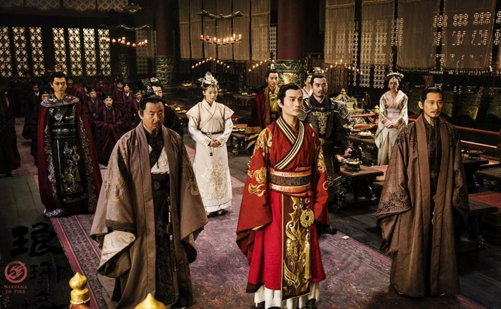
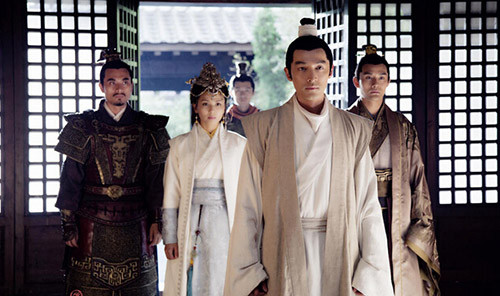
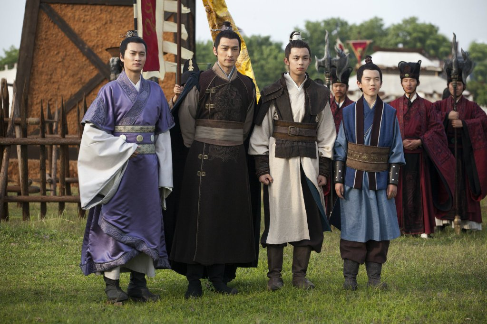

主页 |
故事 |
人物 |
更多 |
|  |
《琅琊榜》（Nirvana in Fire）《琅琊榜》是一部由孔笙、李雪联合执导，胡歌、王凯、刘涛、黄维德、陈龙、 靳东、高鑫等主演，山东影视传媒集团出品的古装架空历史电视剧，改编自海晏的同名小说。该剧以平反冤案、扶持明君、振兴山河为主线，讲述了“麒麟才子”梅长苏才冠绝伦，以病弱之躯拨开重重迷雾、智博奸佞，为昭雪多年冤案、扶持新君所进行的复仇故事。梅长苏在国仇家恨、兄弟情义的漩涡中见招拆招、游刃有余，奏出了“江左梅郎”赤子之心下的一曲慷慨悲歌。该剧以全新的男性视角，从更阳刚的侧面反映了男人之间的义薄云天、情义千秋，吟诵了一曲热血男儿的蜕变之歌. |
“一卷风云琅琊榜，囊尽天下奇英才。”《琅琊榜》多面体中的另一面，即其中带有理想主义的政治隐喻，这其实也是诸多高水平粉丝追逐《琅琊榜》的主要原因。同样是热播剧，例如比起人性险恶处处机关的《甄嬛传》，《琅琊榜》虽然也谈权谋，但传递出的价值观却光明得多，有朋友称之为文科宅的政治理想。 盛世危言 这是一个冤案得雪的故事。 以面沉如水的白面书生梅长苏为因，他不仅是天下第一大帮江左盟的宗主，更被誉为“麒麟才子，得之可得天下”，以白衣身份在大梁王朝储君争夺战如火如荼之际入京，从此搅动朝局风云，翻云覆雨之间扶持不受重用的皇子靖王上位；与此同时，他的真实身份则是十三年前赤焰冤案的幸存者，赤焰军少帅林殊，他的真实目的是通过靖王的成功达到翻案目的。 故事讲到这里，很可能又是一个类型化故事，即忠良得雪、君贤臣良追封感恩的结尾，圆满却俗套。 |
|
《琅琊榜》特别在于，这其实是一个地狱归来的 复仇故事 |
 |
|  | 尚武之光 权谋之外《琅琊榜》也写苦难，大到梅岭惨烈往事与夺嫡过程中凶险，小到个体牺牲以及治疗火寒毒的伤痛，渲染的不是胜利之后的果实划分，而是复仇之路上的人性尊严的重建与守卫。 |
他低眉浅笑，语声淡淡，没有人能看透他所思所想；他总是拥裘围炉，闪动着沉沉眸色算计险恶人心； 他的脸色永远苍白如纸，不见丝毫鲜活气息，他的手指永远寒冷如冰，仿佛带着地狱的幽凉。 他就像是一团熊熊烈火被扑灭后余下的那一抹灰烬，虽然会让人联想到曾经存在过的那团火焰，却再也没有火焰的灼灼热量和舞动的姿态。 阴燃的煤会再度复燃，地狱来客，最重要不仅在于复仇，更在于对于苦难的反思和人性的彰显，这才是一个真正生存过的生命的墓碑。生命可以失败，却不能任其摧毁，地狱煎熬必得有其成就，挑战不可完成的复仇与救赎，不恰好是让地狱煎熬有其意义？正如一位苦难文豪的名言，我怕我配不上自己所受的苦难，他墓碑上写着《圣经》中的一句话，“一粒麦子落在地里如若不死，仍旧是一粒；若是死了，就会结出许多粒来。” 地狱来客，梅长苏之后，还有谁呢？ | |
| Copyright© 2015 正午阳光影业 All Rights Reserved. Powered by 山影 鲁ICP备案2015号 |